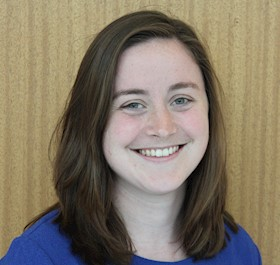

Lindsey Myrick
Detail-oriented and enthusiastic non-profit professional seeks new opportunities in the field of software development
Professional Experience
Recruitment Specialist, Minneapolis, Minnesota, July 2018-August 2019
- Created and managed the strategy for recruiting new students into the program, resulting in the following accomplishments:
- 1,291 applications from students in the Twin Cities area, a 10% increase from the previous year
- 90% of applicants qualified for free and reduced lunch, in line with the mission of Genesys Works, increasing from 75% the previous year
- 61% of students persisted from application to interview stage, increasing from 50% the previous year
- Provided training and ongoing support to the 32 staff members involved in recruitment
Program Coordinator, Minneapolis, Minnesota, August 2017-July 2018
- Supervised twenty high school interns in Information Technology internships, including positions within Quality Assurance, Desktop Deployment, and Help-Desk teams
- Managed the relationship with corporate partner supervisors at companies including Medtronic, Boston Scientific, and SPS Commerce
AmeriCorps Member, Minneapolis, MN, August 2016-June 2017
- Supported 39 low-income high school seniors throughout the college admissions process, resulting in a 95% admissions rate into a bachelor- granting institution
- Developed and delivered after-school programming on topics including self-advocacy skills, essay writing, and financial literacy
AmeriCorps Member, Los Angeles, California, July 2015-June 2016
- Mentored 12 high school freshman at risk of dropping out by tackling academic skill gaps, developing social emotional skills, and monitoring attendance
- Organized and lead activities, celebrations, and projects to improve the community and school environment, including a League of Legends Math Night attended by 200 students
- Developed a weekly behavior intervention program for students with behavioral issues as the Social-Emotional Learning Coordinator at Jordan High School
Education
Carleton College
BA, Bachelor of Arts, Religion, GPA: 3.54
August 2011-June 2015
Recipient of “Distinction in Religion Major” for academic excellence